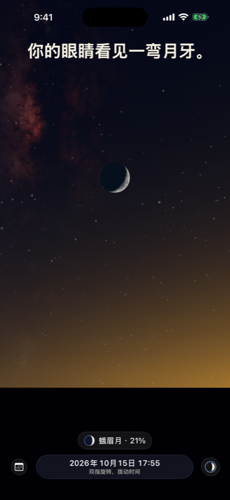
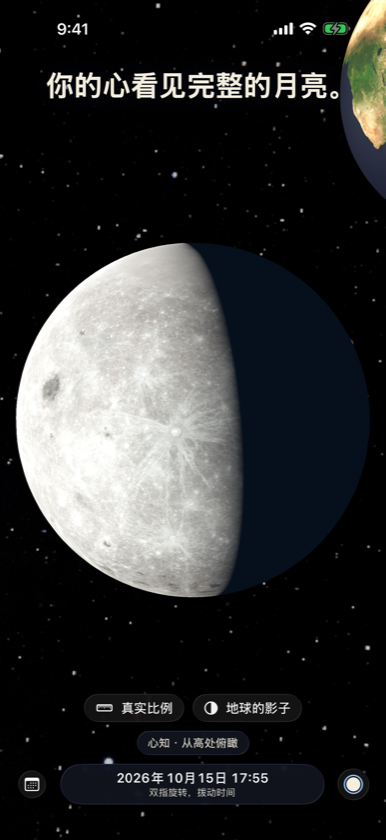
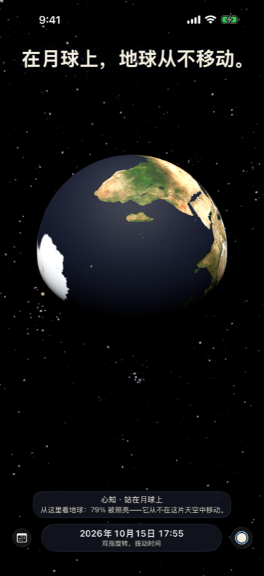

你的眼睛看见一弯月牙。你的心知道，月亮从未缺过。Two Egoes 是一片连续的天空，你可以站在任何地方——你自己的地平线、月球、太阳，或高高在上俯瞰一切。



站在月球上
地球静静悬在月球的天空中，月相与月亮正好相反。
为什么不是每个月都有月食？
按真实比例看月球距离处的地球影子，以及决定每一次食的 5° 倾角。
没有什么是静止的
你坐着不动，每秒却绕太阳行进约 30 公里。
两种看见。
你的眼睛看见一弯月牙。你的心知道，月亮从未缺过。Two Egoes 是一片连续的天空，你可以站在任何地方——你自己的地平线、月球、太阳，或高高在上俯瞰一切。



地球静静悬在月球的天空中，月相与月亮正好相反。
按真实比例看月球距离处的地球影子，以及决定每一次食的 5° 倾角。
你坐着不动，每秒却绕太阳行进约 30 公里。